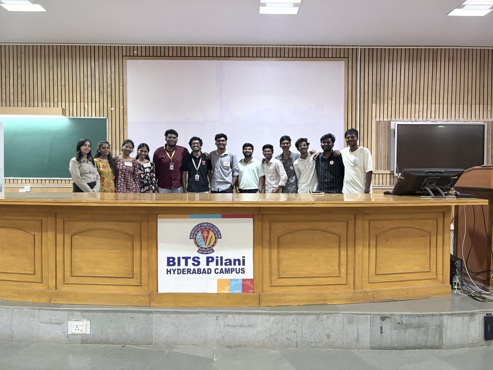
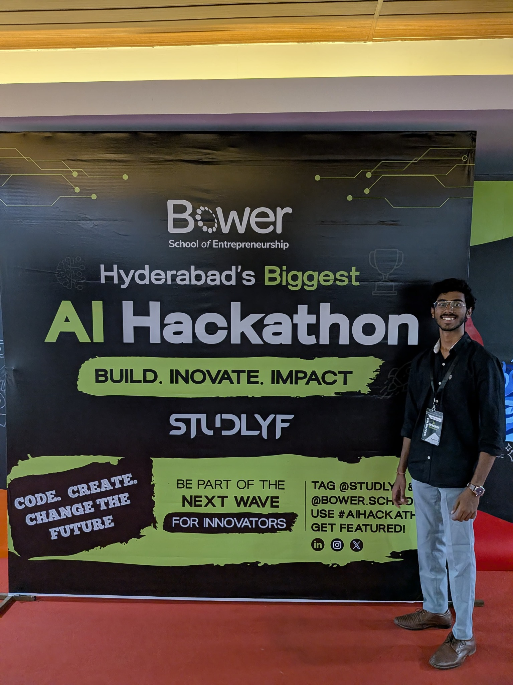
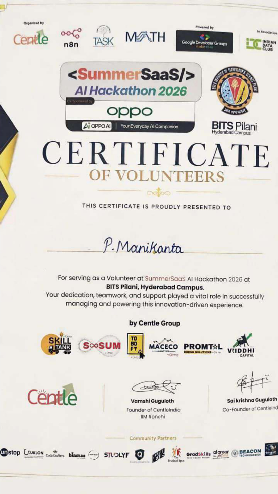
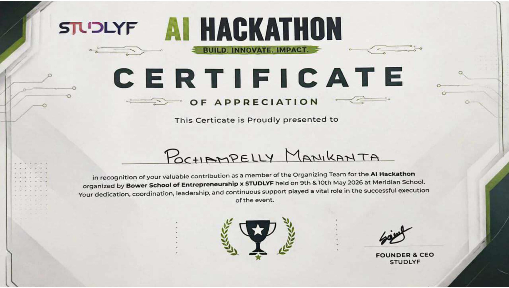
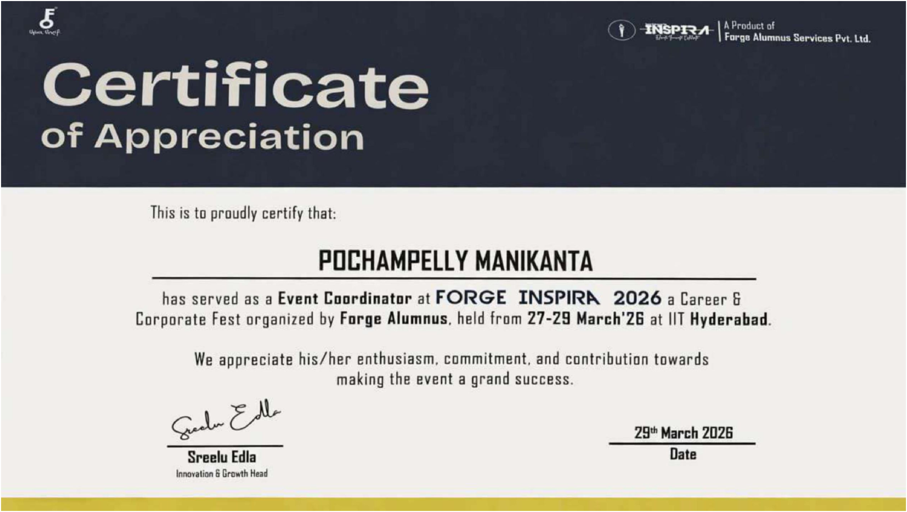

IIM Bangalore
BBA · Digital Business & Entrepreneurship
Business • Innovation • Impact
Business Development | Outreach | AI & ML Enthusiast
An IIM Bangalore BBA (DBE) student with an engineering foundation in AI & ML, passionate about building strategic partnerships and creating impact through innovation and collaboration.
Build. Connect.
Make an impact.
BBA · Digital Business & Entrepreneurship
MVSR Engineering College
Corporate outreach
Direct paid/event conversions
01 / About
I bring together a business-oriented mindset and a technical foundation. My experience spans corporate outreach, campus pitching, event coordination and supporting technology-focused communities.
I enjoy turning conversations into opportunities, keeping teams aligned and helping ideas move from planning to execution.
Start a conversation02 / Experience
A snapshot of my work across outreach, business development and event operations.
Corporate Committee Coordinator
28–29 March · Event coordination & corporate outreach
Made 150+ cold calls to connect with prospective participants and institutions.
Converted prospects into 47 direct paid/event registrations.
Supported team pitches across multiple colleges to encourage student participation.
Coordinated on-ground Ideathon and Codethon operations, helping keep schedules and participants on track.
Business Development Intern
1-month internship
Supported business development activities in a fast-paced startup environment.
Contributed to outreach and early-stage relationship-building efforts.
Event Coordinator & Technical Lead
Idea Pitching Competition
Coordinated the competition from planning through execution.
Managed the digital scoring platform, registrations and participant check-in.
Handled Luma and Unstop event pages and maintained the registrant database, including college details.
03 / Capabilities
Skills developed through academic learning, internships and hands-on event experience.
04 / Beyond the role
Event volunteering and campus initiatives that broadened my exposure to technology and entrepreneurship.

View photo ↗Campus event · Hyderabad
A moment with the event team at BITS Pilani. An opportunity to connect with fellow students, collaborate on the ground and experience a vibrant campus event environment.

View photo ↗AI & entrepreneurship · Studlyf
At Hyderabad's AI hackathon hosted by BOWer School of Entrepreneurship with Studlyf — an energising setting focused on building, innovation and real-world problem solving.
Event coordination & technical lead
Supported the event end to end, including live digital scoring, registrations, check-in and participant coordination.
05 / Education
A learning journey that brings together business thinking, technology and a strong academic foundation.
Business · Digital · Entrepreneurship
Indian Institute of Management Bangalore
Technology · AI · Machine Learning
MVSR Engineering College · Hyderabad
Strong fundamentals. Consistent effort. A foundation for what comes next.
06 / Certificates
A few milestones from volunteering, event coordination and building student communities.

View certificate ↗Volunteer recognition · 2026
Recognised by Centle Group for volunteering at the SummerSaaS AI Hackathon 2026 at BITS Pilani, Hyderabad Campus, supporting the event's coordination and execution.
Open original PDF ↗
View certificate ↗Organising team · May 2026
Recognised for contributions to the organising team at the BOWer School of Entrepreneurship × STUDLYF AI Hackathon, held on 9–10 May 2026 at Meridian School.
Open original PDF ↗
View certificate ↗Event coordinator · March 2026
Certificate of appreciation for serving as Event Coordinator at the Career & Corporate Fest organised by Forge Alumnus at IIT Hyderabad, 27–29 March 2026.
Open original PDF ↗07 / Contact
Interested in partnerships, business development opportunities or collaborating on an event? I'd be glad to connect.
Based inHyderabad, India
Let's Connect